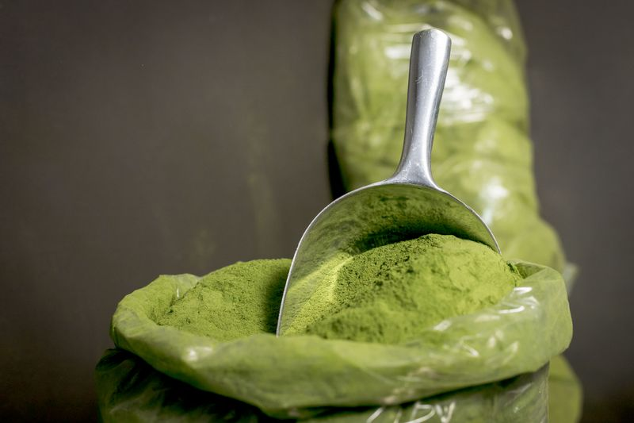
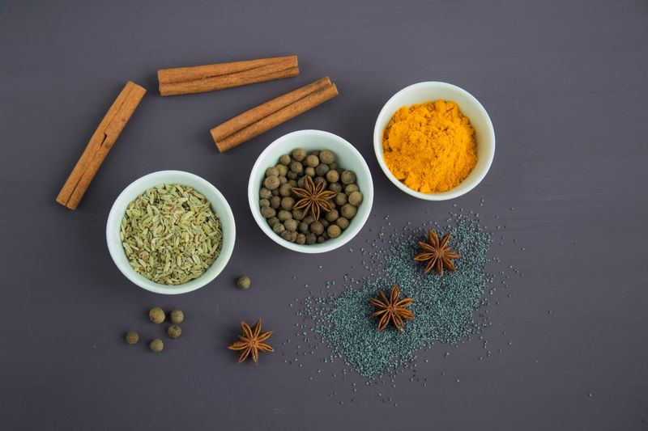

Moringa Powder




ORGA_ME Moringa Powder is a nutrient-dense superfood made from carefully selected moringa leaves (Moringa oleifera) sourced from smallholder farms in Togo and Senegal. The leaves are harvested at peak nutritional value, then shade-dried using traditional methods that preserve their vibrant green color and rich vitamin, mineral, and antioxidant content. After drying, the leaves are finely ground into a smooth, versatile powder that blends seamlessly into smoothies, teas, soups, and other dishes. Known around the world as the "Miracle Tree," moringa is one of the most nutrient-packed plants on earth, offering an easy, delicious way to boost daily nutrition without overpowering the flavor of your favorite foods.
Nutritional Powerhouse & Body Support
Moringa Powder is a nutritional powerhouse, supporting immune function, sustained energy, digestion, and overall vitality. It provides over 90 nutrients including vitamins A, C, and E, iron, calcium, magnesium, and potassium. The antioxidants in moringa — including quercetin and chlorogenic acid — protect cells from oxidative stress and support healthy aging. Regular consumption supports joint health, promotes clear skin, helps maintain healthy blood sugar levels, and provides all nine essential amino acids for complete protein support.
How to Use
Mix one teaspoon of Tea Gingcuci Powder into 8 oz of hot water or your favorite beverage. Stir until fully dissolved and enjoy. Use daily. Can also be added to smoothies, oatmeal, yogurt, or iced beverages. Store in an airtight container in a cool, dry place.
Ingredients
100% pure moringa leaf powder (Moringa oleifera) — No additives, no preservatives.